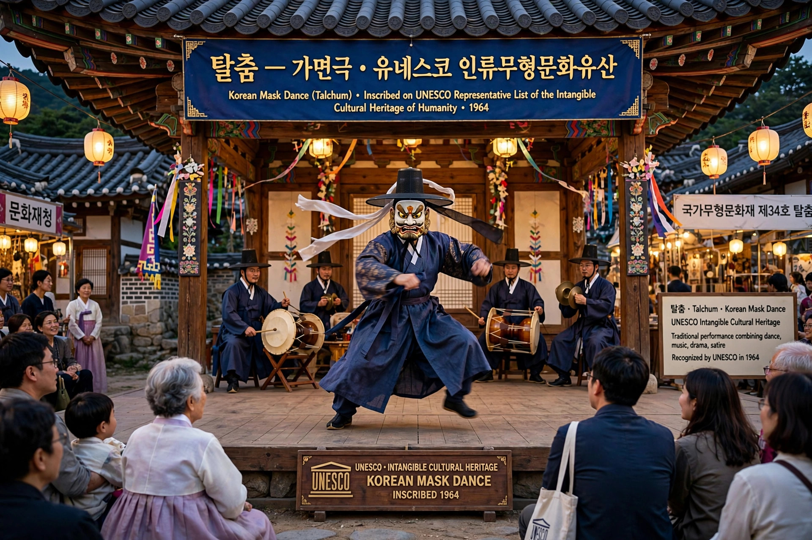

| Convention | Convention for the Safeguarding of the Intangible Cultural Heritage (2003) |
|---|---|
| Administered by | UNESCO |
Intangible cultural heritage (ICH) is a practice, representation, expression, knowledge or skill — as well as instruments, objects, artefacts and cultural spaces associated therewith — that communities, groups and individuals recognize as part of their cultural heritage, as defined by UNESCO's 2003 Convention.

Unlike tangible heritage such as monuments, intangible heritage is transmitted from generation to generation and constantly recreated in response to environment, nature and history, providing a sense of identity and continuity.
The Convention identifies five broad domains: oral traditions and expressions including language; performing arts; social practices, rituals and festive events; knowledge and practices concerning nature and the universe; and traditional craftsmanship.
UNESCO maintains the Representative List of the Intangible Cultural Heritage of Humanity, the List of Intangible Cultural Heritage in Need of Urgent Safeguarding, and the Register of Good Safeguarding Practices. Early proclamations of Masterpieces of the Oral and Intangible Heritage of Humanity (2001–2005) were incorporated into the Representative List in 2008. Examples include tango, flamenco, yoga, reggae music, and various cuisines and festivals.
Safeguarding means measures aimed at ensuring viability, including identification, documentation, research, preservation, protection, promotion, enhancement, transmission through formal and non-formal education, and revitalization.